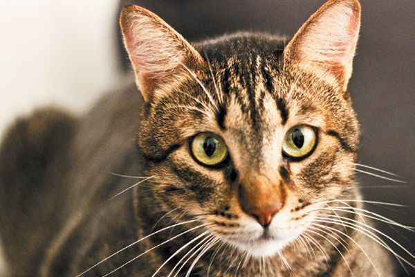
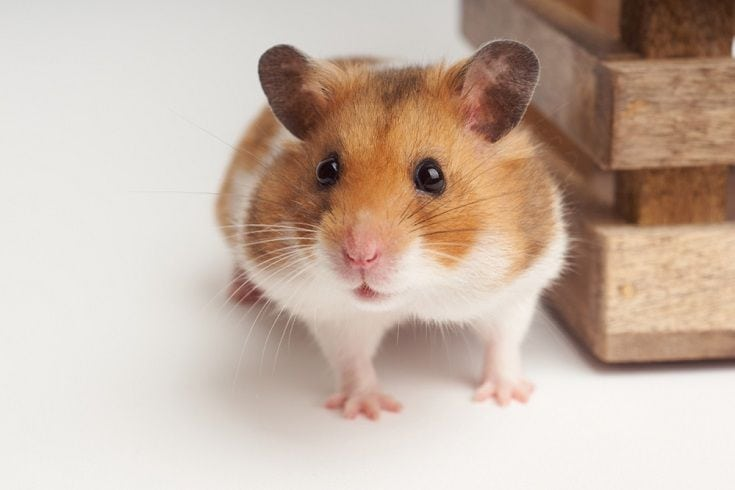
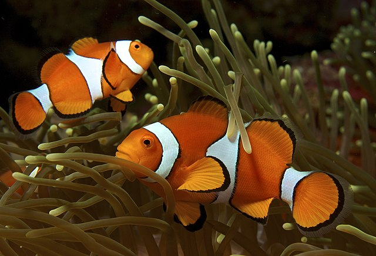

There are many diffeent breeds of dogs, some popular ones are golden retrievers, german sheppards and terriers.

There are many different breeds of cats, some popular ones are tabby, tuxedo and siamese.
There are many different breeds of pet rabbits, inculding lionhead, short-haired and holland lop.
There are many different breeds of hamsters, including Syrian, Chinese and Winter White Russian Dwarf.
There are amny different types of pet fish, some popular ones are goldfish, clownfish and beta.
